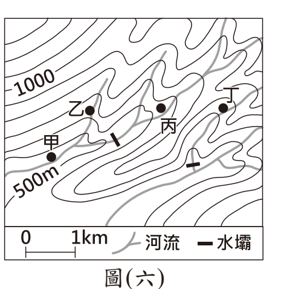

小荃想造訪一處祕境。入口告示牌寫著：
「上游水壩不定時洩洪，請勿進入溪谷以確保生命安全」
下面是那一帶的等高線地形圖。甲、乙、丙、丁哪一點最可能是她要找的祕境？

114 年國中教育會考社會科第 17 題（示意圖為重繪）。選了才會往下。
全國 59.6% 答對，看起來不算難。但「待加強」那一群只有 22.8% 答對， 而且 29.6% 集中選了 (C)。
差距這麼大，代表這題卡住的不是知識，是會不會讀那張圖—— 看得懂的人覺得一目了然，看不懂的人只能猜。
114 年官方試題分析：全體通過率 0.5956、鑑別度 0.49。
問題一：圖上等高線在兩個地方彎得特別明顯——
一處往上凹（尖端朝高處），一處往下凸（尖端朝低處）。
河流是畫在哪一種上面？
河流畫在往上凹的那一條線上。
因為水往低處流——兩側比較高、中間比較低的地方，才留得住水，那就是山谷。 而等高線在山谷處會被「往高處拉」，形成尖端朝上的 V 或 U 字。
反過來，尖端朝低處凸出的地方，是兩側低、中間高——那是山脊，水會從兩邊流走。
問題二：告示牌說「請勿進入溪谷」。
對照圖上，乙、丙、丁三點在哪裡？
三個都在溪谷裡——它們都坐落在等高線往上凹的那條軸線上，也就是河流經過的地方。
而且水壩在上面，一洩洪，整條溪谷的水位都會暴漲。三個都不能去。
問題三：那甲呢？它在哪裡？
甲在等高線往下凸的那一側——那是山脊，不是溪谷。
山脊上的水會往兩邊流走，不會積在腳下。水壩洩洪淹的是溪谷，淹不到山脊。
所以答案是 (A) 甲。
🔴 整題不需要任何地理知識，只需要看懂「線往哪邊彎」。 那 29.6% 選丙的人，多半只看到「丙離水壩比較遠」就覺得安全—— 但沿著溪谷再遠都還是溪谷。
① 疏密看陡緩。線擠在一起＝坡陡；線拉得開＝坡緩。 因為每兩條線之間的高度差是固定的，水平距離越短，當然越陡。
② 彎向看水路。尖端朝高處＝山谷（有水）；尖端朝低處＝山脊（分水）。
課本 3-2 還教了另外兩種地形圖：分層設色圖（用顏色表示高度範圍， 適合一眼看整體）與地形剖面圖（沿一條線切開看側面）。 三種各有用途，但只有等高線圖能告訴你水往哪裡走。課本 p.38–40
113 年第 3 題 全國 80.5% 答對——但「待加強」那群只有 37.4%。
臺灣有些聚落用相對位置命名。在地勢較高處屯兵設營稱「上營盤」，
其西北方山腳處則稱「營盤腳」（下營盤）。
題目給一張營盤腳附近的等高線地形圖（100～200m，附指北針與比例尺），
問上營盤在圖中何處。
（原圖未重繪，所以這裡不問你點在哪——問一件更重要的事：）
要在圖上找出上營盤，你必須同時用到哪兩樣東西？
答案是 (C)：等高線 ＋ 指北針。
① 等高線讀高低——「上營盤」在地勢較高處，先圈出等高線數值大的那一區。
② 指北針讀方位——營盤腳在上營盤的西北；反過來說，
上營盤在營盤腳的東南。
🔴 只做第一步的人，會在「高的地方」裡挑錯一個——因為高的地方通常不只一處。 是方位把答案縮到唯一。
📌 這正是單元 ① 講過的：方向標不是裝飾。 這題全國 80.5% 答對，但「待加強」那群只有 37.4%——差距就在有沒有做第二步。 課本 p.16、p.38
115 年第 29 題 （115 年無官方試題分析，無選答百分比）
臺灣地名中的「坑」指溪谷。
閩南族群的「坑頭」，指聚落位在溪流的上游；
客家族群依開墾順序命名，拓墾由下游往上游進行，最後開墾的聚落稱「坑尾」。
四張等高線示意圖中，哪一張符合兩族群的命名原則？
答案是 (A)——兩個都在上游。這題的設計很妙：
閩南「坑頭」：直接定義為上游。
客家「坑尾」：拓墾由下游往上游，最後開墾的叫坑尾——
最後開到的地方，就是最上游。
🔴 「頭」和「尾」聽起來相反，兩個聚落卻落在同一端。 因為兩個族群命名的依據根本不同：一個看水流，一個看開墾順序。
而要在圖上找出「哪一端是上游」，靠的就是等高線數值—— 數字大的那一端地勢高，那就是上游。課本 p.38
112 年第 47 題 全國 83.0% 答對——五年來七上範圍最好做的一題。
給一張 1400～3600m、每 200m 一條等高線的圖，附比例尺 0～500m，問地形判讀。
放這題不是要你做，是要你看一件事：同樣是等高線題，通過率可以從 83% 到 22.8%。
差別在問法——直接問「哪裡比較陡」很好做；
包裝成「洩洪別進溪谷」「聚落怎麼命名」就卡住一大票人。
📌 但圖上的線一模一樣。只要每次都回到那兩個動作—— 看疏密、看彎向——問法怎麼變都一樣做。
一、線的疏密 → 坡的陡緩。
二、線的彎向 → 水的去向。
尖端朝高處是山谷，水在那裡；尖端朝低處是山脊，水從那裡分開。
114 年問「哪裡不會被洪水淹」、113 年問「哪裡地勢較高」、115 年問「哪一端是上游」—— 三種問法，同兩個動作。
📖 對應課本：3-2 常見的地形表示方法（p.38–41，等高線圖／分層設色圖／地形剖面圖）、 1-4 如何閱讀地圖（p.16–17，方向標與比例尺）。